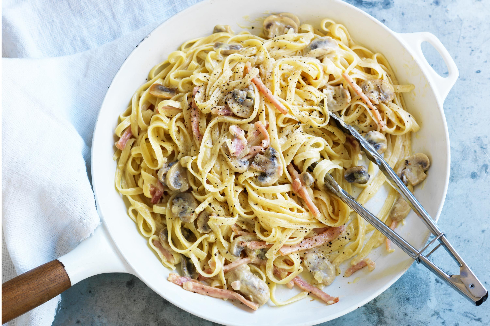

Carbonara

Description
This easy carbonara recipe with cream is one of Australia’s most popular recipes.
Ingredients
- 400g spaghetti
- 1 tbsp olive oil
- 200g sliced Primo Gourmet Selection Pancetta, cut into 1cm-wide strips
- 2 garlic cloves, finely chopped
- 3 eggs, plus 1 extra yolk
- 100ml thickened cream
- 2/3 cup (50g) freshly grated parmesan, plus extra to serve
- 2 tbsp chopped flat-leaf parsley leaves
Directions
- Cook pasta in a large pan of boiling salted water according to the packet instructions.
Meanwhile, heat oil in a frypan over medium heat.
Cook pancetta, stirring, for 2-3 minutes until beginning to crisp. Add garlic for 30 seconds, then set pan aside
- Place eggs, yolk, cream and parmesan in a bowl. Season, then mix gently with a fork. Drain pasta, then return to pan.
Quickly add egg and pancetta mixtures and parsley. Toss to combine - the heat from the pasta will cook the egg slightly and form a creamy sauce.
Serve immediately with extra parmesan.
Return to Main page.